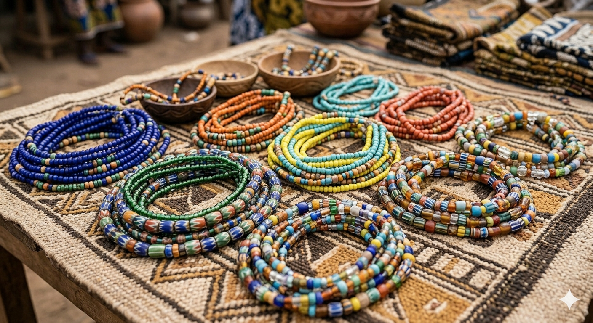

Chez Layali Perles, nous croyons que chaque perle raconte une histoire. Le Baya est bien plus qu'un accessoire de mode ; c'est un symbole de confiance, de protection et de féminité ancestrale.
Toutes nos pièces sont assemblées à la main avec des matériaux de qualité supérieure pour vous offrir confort et éclat durable — une promesse transmise de génération en génération.
Voir la collection